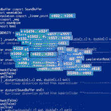
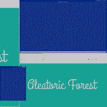
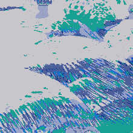
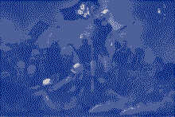
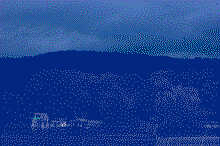
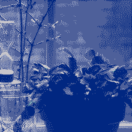
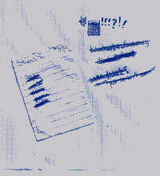
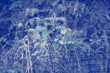
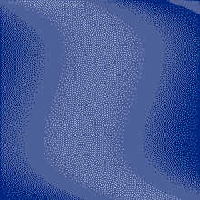
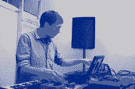

+622, +363 [2020]
A single trombone note expanded via pulsar synthesis and various processing into a slow chorale.
Liltingly [2020]
Originally performed on the Decentralized Sonic Quarantine Network streaming series.
Test Suite [2020]
Most systems operational.

Aleatoric Forest - Documents Volume 1 [2019]
Procedural reworkings of field recordings from the phonography.radio.af channel on Aleatoric Forest.

Pieces from ...a trustable cloud [2019]
An unattended procedural reworking of C. Reider's album "...a trustable cloud".

Various - Revolution of Our Times: Fediverse for Hong Kong [2019]
A benefit compilation for the Sue The Abuser crowdfunding campaign to help 10 victims of police brutality in Hong Kong.
I contributed Fight Song, a microsound collage made from a segment of an interview with Noam Chomsky and selections from the music of Hildegard of Bingen.

A Catalog of River-Dwellers [2019]
Beneath the river-water, through the way to the lake there is a monster.
River Dreck [2019]
Outtakes from A Catalog of River-Dwellers.

Un [2019]
Monochrome Bells [2016-2019]
This is a processed mixture of 22 days of recording the environment surrounding the daily noon bells that rang at the church down the street from my former apartment in Milwaukee's riverwest neighborhood. For Bernhard Günter.


it's / a / hoot / to / mix / and / match [2018]
A mixture of things recorded between 2015 and 2018.

The Perfume-Eater from Sarvagandhasugandhā [2018]
Then, the Licchavi Vimalakīrti set himself in such a concentration and performed such a miraculous feat that those bodhisattvas and those great disciples were enabled to see the universe called Sarvagandhasugandhā, which is located in the direction of the zenith, beyond as many buddhafields as there are sands in forty-two Ganges rivers. There the tathāgata named Gandhottamakūta resides, lives, and is manifest. In that universe, the trees emit a fragrance that far surpasses all the fragrances, human and divine, of all the buddhafields of the ten directions.
West Allis Auto Body Co. [2016]
A compilation of music recorded between 1998 and 2016 that never found a home anywhere else.

Momentum [2016]
These are a few short suites of songs drawn from live (solo) versions of songs I originally did with Safari Al and Dogwood Last. The title track is an acousmatic drone thing contructed from a few phrases spoken by Safari Al. There's a version of an old pop-ish remix I did of Pictures of Trees by Inlets in there too, why not.

Field Recordings [2016]
Unprocessed sonifications of data on my laptop using a classic technique system administrators use as a joke and a way to demonstrate the everything-is-a-file paradigm of *NIX platforms. Make your own by running the commands in the track titles.

I've Got Nothing But Friendships Left To Save. I'm Feeling Unsafe As If The Road Below Could Go Sinkhole At Any Moment [2016]
The final EP in a trilogy of EPs. A collaboration with Milwaukee poet and filmmaker WC Tank. Also features a track based on guitar samples sourced from music by Andrew Weathers.
Blessed Indeed Are They Who Live Among Those Who Hate, Hating No One; Amidst Those Who Hate, Let Us Dwell Without Hatred [2016]
The second EP in a trilogy of EPs. A collaboration with vocalists Alexander Kollman and Derek Piotr.
Humanity Won't Be Happy Till The Last Bureaucrat Is Hung With The Guts Of The Last Capitalist [2015]
The first EP in a trilogy of EPs. A version of a song by Kory Burrell featuring vocals and ukelele by Kory Burrell and samples of a cassette tape loop by C. Reider.
Solos For Unattended Computer Volume Two [2015]
Second in a series of recordings of realtime algorithmic computer improvisations with no human intervention. Created on a long amtrak train ride.
A Sound Interview With Joe Westerlund [2015]
An interview with Joe Westerlund.
Solos For Unattended Computer Volume One [2014]
First in a series of recordings of realtime algorithmic computer improvisations with no human intervention.
O/OU Remix for Andrew Weathers [2014]
My remix of the Andrew Weathers Ensemble tune O/OU from What Happens When We Stop.
Logistic Variations [2013]
Single-sample pulsetrain synthesis driven by wavetables synthesized from the logistic equation.
Computer Music with Voices: He Can Jog Plays the Music of Eric & Magill [2011]
Versions of songs from Eric & Magill's "All Those I Know" featuring voices and guitars and other wonderful sound contributions from Sawako, Brendan Landis, Bryan Teoh and Cara Eggers. Also features sound processing and synthesis with a very early version of pippi called fabric.
Norwood, Wisconsin [2011]
Full length for Ian Hawgood's Nomadic Kids Republic label. Most of the album is a long thing called Gather / Burn / Echo which is a comprovisation on top of my favorite take from a lapsteel-based thing I was doing live often at the time. Featuring vocals and cello by my cousin Laurel Ogren. Also a song called "Pippi" (recorded shortly before I started working on pippi) based around recordings of a creeky upright piano that my roommates dragged from Manhattan to Brooklyn on the subway on one epic day.
Spark [2010]
This is a live recording from the 2010 SPARK festival in Minnesota -- originally a duet with visualist Mark Henrickson. Some footage from the festival is floating around somewhere. I was really into induction microphones at this point. This was also one of the last concerts I performed with Max/MSP before I started working on pippi. This recording features a really wonderful tape loop remix by Will Long. (Will did his remix in 2015.)
Songbook [2010]
Full length for Andy Menchel and Nick Sanborn's Listening Party label. Again sourced (except for the track with John McCaig) from recordings of the live set I was doing at that time,
A Film For Ian Hawgood [2010]
My remix of a track from Ian's "Soundtrack To A Film In My Head Which Will Never Get Made". Features vocals & lyrics by Nicholas Sanborn Esquire III, who wrote a whole damn song around a few meandering loops for this.
Africa Just Wants To Have Fun Remix For Volcano! [2009]
One of I think three remixes I tried, this was the only one that ever got finished. Included as a b-side to Volcano!'s So Many Lemons single on the leaf label.
Etudes [2009]
Full length for the Distance Recordings netlabel. All tracks sourced from various recordings of the live set I was doing around that time.
Summit Loop Remix For Talkingmakesnosense [2008]
Featuring a poem & vocals by Kelly Shaw Willman.
Saint Paul [2007]
My contribution to this excellent nexsound compilation of sonic portaits.
I wrote: "Here's what I think of when I think of the city I was born in, Saint Paul. Open, green spaces. Small businesses and familiar architecture. Cats that shed their hair everywhere, lego sets on Christmas morning. I've done my best to synthesize my memories of Saint Paul into something that conjures those same feelings for me."
A Small Thing [2005]
Another EP for the Hippocamp netlabel -- takes its title from a poem by Earl B. Kavanaugh.
New Ground Has Not Broken, Soil Last Week And Dirt Today [2004]
My first full length album for Fresh Sound New Talent sublabel Fork Series curated by James "Nosordo" Pearse.
Mokkha [2004]
My first contribution to the wonderful Hippocamp netlabel.
We All Have Hot Chocolate Tummies and Frozen Faces [2003]
First outing under the He Can Jog monkier.